使用說明與常見問題
審判工具箱的操作步驟和常見問題。這裡找不到答案的話，歡迎寫信給我們。
怎麼用
十三個工具分成四組。大部分工具都是三個步驟：放入檔案、確認與預覽、輸出。輸出之前，畫面會先列出會產生的每個檔案；每次輸出都存到一個新資料夾（預設在「下載項目」的審判工具箱），不會蓋掉之前的結果。點下面的工具名稱，看分步驟的說明。在 iPhone 上，主要按鈕在畫面下方；Mac 與 iPad 在右上角。
判決連到司法院裁判書查詢網站
判決下載依法院、日期、關鍵字搜尋公開判決，看過全文再勾選下載。
搜尋 › 勾選與預覽 › 輸出
- 填法院、裁判日期（民國年，例如 113.10.01）、關鍵字或案由，按「搜尋判決」。這一步只列清單，不下載。
- 點清單裡的一筆，右邊顯示判決全文。要的就勾選。
- 按「輸出」，選格式：司法院提供的原始 PDF、Markdown、每幾份合併成一個 PDF，或依「主文、事實、理由」切成多個 Markdown。右邊會列出會產生的檔案。
- 年代較早、只有全文的判決不會依章節切開。
- 法院一次選一個，或選「所有法院」。
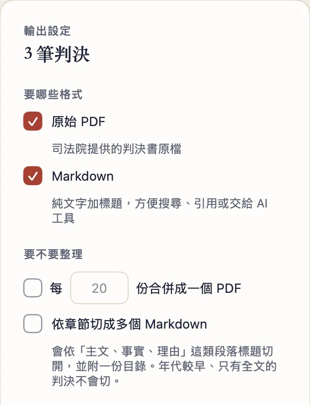
讀卷閱卷回來，先把卷整理成找得到東西的樣子
書籤形成分出起訴書、筆錄、書狀等每一份文件，替整卷加上書籤。
放入卷證 › 確認與預覽 › 輸出一次一卷
- 放入一卷 PDF。可以替這一卷取簡稱（例如「偵卷」），卷面頁碼和 PDF 頁碼對不上時填「頁碼偏移」。
- 清單依證據類型分組（壹、起訴文書；貳、供述證據…）。點一列，右邊顯示那份文件的頁面。名稱不對可以改名，不要的從清單移除。
- 選要輸出成什麼：加了書籤的一份 PDF（原檔不會被改動）、依書籤切成一份份 PDF，或依書籤切成一份份 Markdown。
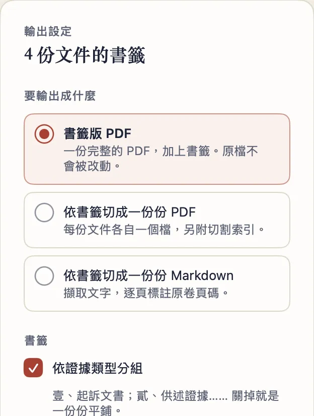
供述切割依陳述人把筆錄分開，不同卷裡同一個人的放在一起。
放入卷證 › 確認與預覽 › 輸出可多卷
- 放入一卷或幾卷。同一個人在不同卷裡的筆錄，會整理在一起。
- 清單依陳述人分組，寫出身分（被告、受詢問人等）。判斷錯的可以修改陳述人，不要的文件可以排除。點一列看那一段筆錄的頁面。
- 輸出設定裡選怎麼分檔，例如被告方的書狀要不要併進被告的檔案。右邊列出每位陳述人一份 PDF 與一份切割總覽，PDF 可以按「預覽」先看。
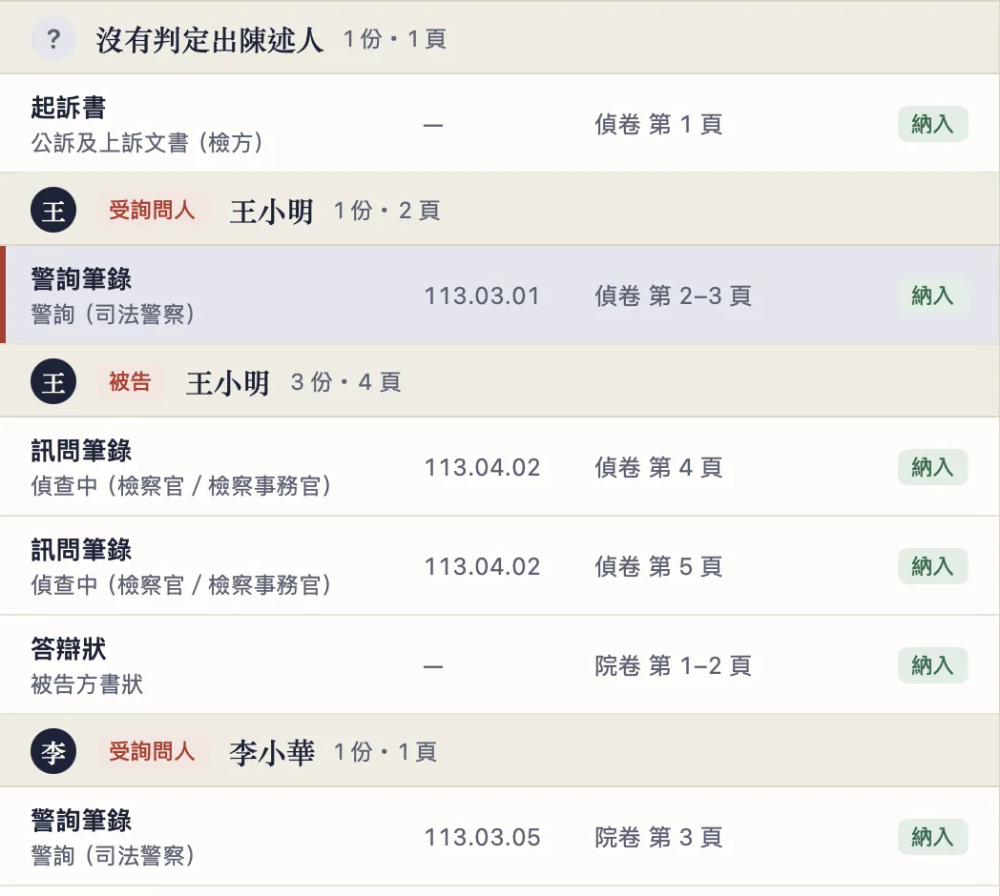
全文搜尋幾卷一起找關鍵字出現在哪幾頁，點一筆就跳到那一頁。
放入卷證 › 搜尋可多卷
- 放入一卷或幾卷。第一次會建立搜尋資料，掃描頁要先辨識文字，頁數多時要等一下，可以停止。
- 輸入關鍵字，打字時就會開始找。用空白隔開幾個詞時，同一頁每個詞都出現才列出。每筆附卷名、頁碼和前後文。
- 點一筆，右邊顯示那一頁並框出位置。要看整份，按「在 PDF 打開這一頁」。台與臺、全形與半形、斷成兩行的詞都找得到。
- 這個工具不產生檔案。搜尋資料存在這台裝置上，可以在 App 的「關於」查看大小並清除。
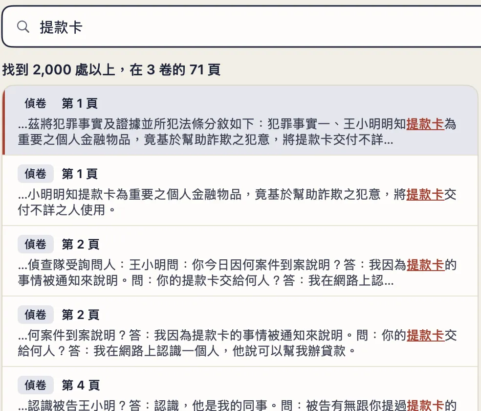

PDF 轉 Markdown把卷證轉成可以搜尋、可以貼到其他工具的文字檔。
放入卷證 › 預覽 › 輸出可多卷
- 放入一卷或幾卷。
- 預覽畫面左邊是原頁面，中間是轉出來的 Markdown，右邊是轉換設定。可以翻頁、換一卷看。
- 改轉換設定（每頁結尾標註頁碼、偵測並轉換表格、保留行內格式、取出圖片另存），預覽會馬上跟著變。確定後輸出，每卷一份 .md。

章節切割照文件裡的章節標題（壹、貳、一、二）切開，每章一份 Markdown。
放入卷證 › 確認與預覽 › 輸出一次一卷
- 放入一卷 PDF。
- 清單列出找到的章節，可以選切到第幾層（壹、貳 或 一、二）。點一列看那一段的頁面，App 認出的章節標題用紅底標出。可以改名，或不要某一段。
- 輸出每個章節一份 Markdown，可另附目錄索引。第一章之前還有內容時，另外存成「00_開頭內容（章節前）.md」。
- 從 PDF 書籤來的章節，頁面上不會標紅底。
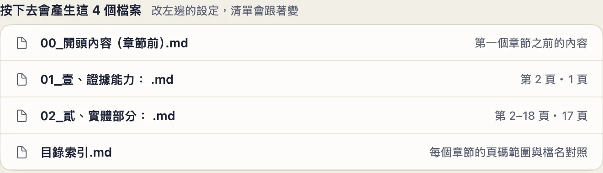
可搜尋 PDF把掃描頁辨識出的文字寫回 PDF，頁面看起來不變，但可以搜尋、反白、複製。
放入 PDF › 設定與預覽 › 輸出可多卷
- 放入一份或幾份。畫面列出每份有幾頁是掃描，以及大約要多久（約每頁 4 秒）。
- 選一頁，看辨識出的文字，頁面上每一行用紅框標出。
- 輸出每份一個可搜尋的 PDF。已經有文字的頁和空白頁不處理。處理中可以停止。
- 只處理橫書。直書、很小的字和密集的表格認不完整。

遞狀與交付要送出去之前
證物冊幾份證物排好順序，蓋上「原證 1」這類編號，合成一冊並加上目錄。
放入證物 › 排順序與編號 › 輸出可多卷
- 放入幾份證物 PDF。
- 拖曳排順序，名稱點兩下可以改。設定編號前綴（原證、被證或自訂）、從第幾號、蓋在每份第一頁或每一頁、頁碼格式（- N -、第 N 頁或不加）。右邊是蓋好的樣子，可以切換看目錄頁。
- 輸出一冊：最前面一頁證物目錄（編號、證物名稱、頁碼），全冊連續頁碼，並加上書籤。勾「同時輸出每件各一份」，另外每件存一份。

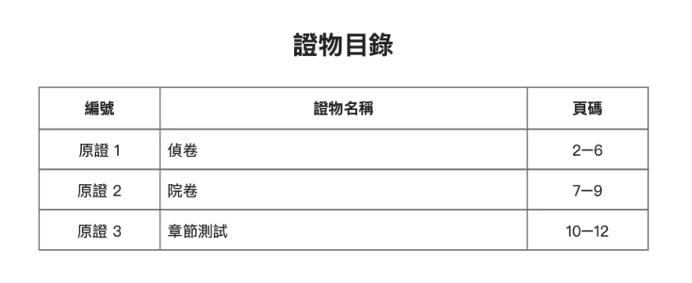
去識別化找出姓名、身分證字號等個資，逐項確認後，輸出換成代號（姓名A）的文字檔。
放入 PDF › 確認要遮的項目 › 輸出文字可多卷
- 放入一份或幾份。App 找出姓名、身分證字號、居留證號、電話、電子郵件、地址、出生年月日、銀行帳戶和車牌。
- 逐項確認。左邊一個名字一列，可以取消；右邊原頁面框出這一頁要遮的位置，下面是換成代號後的文字。法官、檢察官、書記官這類職務人員會列出，但預設不勾。漏掉的字用「加入要遮的字」補上，不要遮的放進「不遮的名單」。
- 選格式（Markdown 或純文字）與替換方式：代號（姓名A，同一個人同一個代號）、留姓（王○○）或遮蔽（███）。用代號時可以另外存一份對照表（JSON）。輸出每份一個文字檔，輸出後自動檢查文字裡還有沒有要遮的字串，有的話列出檔名、頁碼和前後文。
- 「還原」分頁：選對照表，把含代號的文字（例如 AI 工具的回覆）貼上，右邊就是換回原文的結果，可以拷貝。
- 輸出的是文字，不是塗黑的 PDF。
- 找個資用的是規則和卷證的版式（例如「被告」「受詢問人」後面的名字），不是 AI 模型，一定會有漏：沒有稱謂的人名、文字辨識讀錯的字、只寫到區的地址、圖片裡的個資都抓不到。輸出前請逐項確認，輸出後也請再看一次。
- 對照表含個資，預設不產生；要存的時候，請自己選一個跟輸出不同的位置。留姓與遮蔽無法還原，只有代號可以。

貼上含代號的文字

換回原文

頁碼與浮水印在每一頁加上頁碼或流水號，也可以加浮水印。
放入 PDF › 設定與預覽 › 輸出可多卷
- 放入一份或幾份。
- 頁碼可以選位置（上下各三格）、格式（「第 N 頁」「- N -」「N / 總頁數」「N」，或「ABC000001」這類流水號）、從第幾號、字級，以及第一頁不印（封面）。浮水印可以設文字、斜放或水平、每頁一個或鋪滿、透明度。兩個可以同時用，右邊是蓋好的樣子。
- 輸出每份一個 PDF。原本的頁面內容不會被重畫，文字一樣可以搜尋。
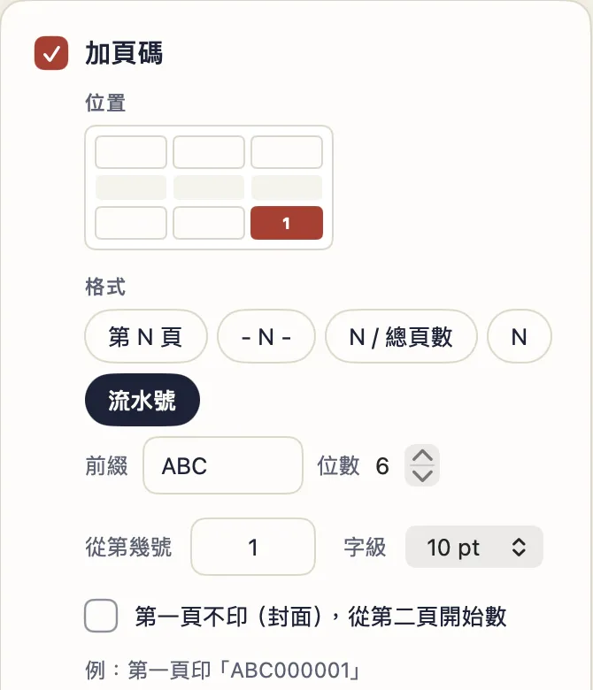
密碼替 PDF 加上開啟密碼，或用原密碼打開，存一份沒有密碼的版本。
放入 PDF › 設定與預覽 › 輸出可多卷
- 放入一份或幾份。有開啟密碼的檔案，放入時會跳出來問密碼。
- 上面切換用途。加上密碼：輸入兩次，中文密碼也可以。忘記密碼就打不開，請另外記好，並用其他管道告訴收件人。
- 拿掉密碼或限制：用放入時輸入的原密碼打開，存一份沒有密碼、沒有列印或複製限制的版本。沒有密碼也沒有限制的檔案，列為不用處理。請只用在自己有權使用的檔案。
- 加密方式是 AES-256。很舊的 PDF 閱讀程式（例如 Acrobat 9 以前）打不開。
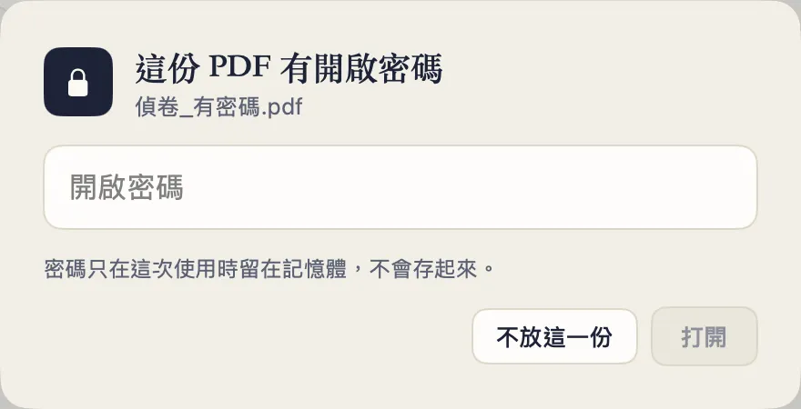
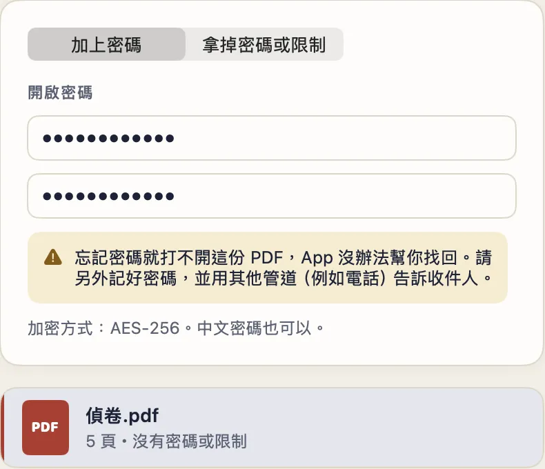
頁面零碎的整理
頁面整理看縮圖合併、拆分、重排、旋轉、刪頁，也能找出疑似空白的頁。
放入 PDF › 整理頁面 › 輸出可多卷
- 放入一份 PDF。要合併，按「再加一份（合併）」。
- 在縮圖上點選（按住 ⌘ 或 Shift 選多頁），拖曳換順序，旋轉或刪除選取的頁。要拆開的地方按「從這裡拆開」。改錯了可以復原。
- 按「找空白頁」，疑似空白的頁用虛線框標出。可以「逐頁確認」，或「全部照建議處理」（只刪比較確定的那幾頁）。
- 輸出時選存成一份、在拆開處拆開、每幾頁一份，或依第一層書籤拆開。書籤會跟著搬，指到被刪掉的頁的書籤改指到後面最近的一頁。
- 很淡的鉛筆字或掃描很淡的頁，可能被當成空白，所以只列出、不會自動刪。
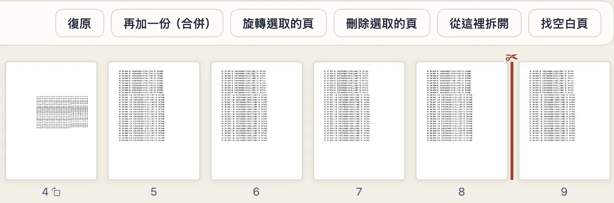
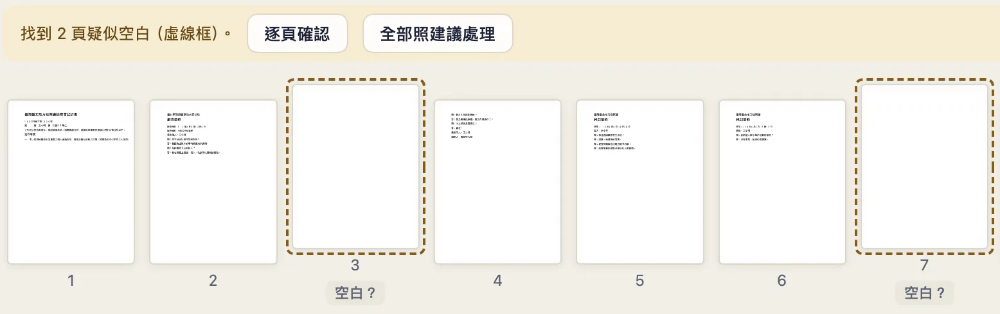
圖片與掃描幾張圖片合成一份 PDF、PDF 每頁存成圖片，或把頁面縮放成 A4。
放入檔案 › 設定與預覽 › 輸出可多卷
- 圖片轉 PDF：放入幾張圖片，拖曳排順序，選放進 A4（可以四邊留白）或照原圖大小。橫的圖片用橫式 A4。JPG 照片不會被重新壓縮。
- PDF 轉圖片：選 JPG 或 PNG，解析度有「螢幕閱讀」（150 dpi）和「列印」（300 dpi）兩種。每一頁存成一張圖。
- 縮放成 A4：大小不一的頁面縮放到 A4，內容不重畫。
- 在 iPhone・iPad 上也可以用相機掃描紙本文件，掃好的 PDF 可以接著用其他工具處理，例如可搜尋 PDF、書籤形成。
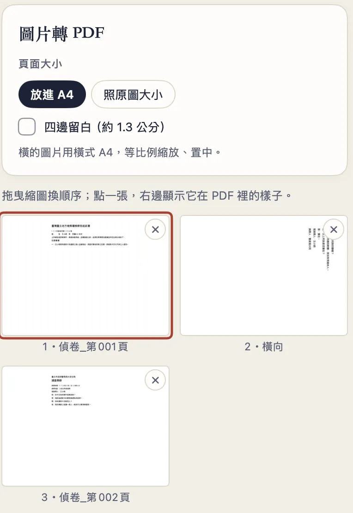
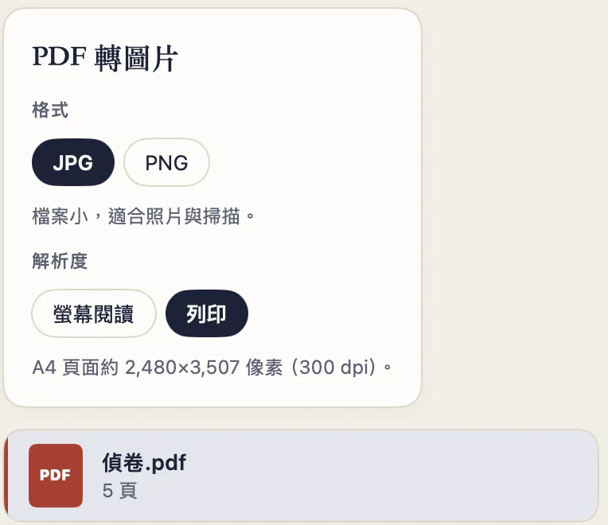
常見問題
卷證會上傳嗎？
不會。卷證只在這台裝置上讀取和處理，文字辨識也是用裝置內建的功能。只有判決下載會連網，連到司法院的網站。
掃描的卷證可以用嗎？
可以。沒有文字的頁面會自動辨識文字。一般內文大致正確；掃描品質差的頁面、很小的字和密集的表格容易出錯。想讓掃描檔在其他程式裡也能搜尋，可以用「可搜尋 PDF」。
分出來的清單不對怎麼辦？
在確認與預覽這一步修改。供述切割可以改陳述人、排除或納入；書籤形成可以改名、從清單移除；章節切割可以改名、不要某一段。
「頁碼偏移」要填什麼？
卷面頁碼和 PDF 頁碼的差。例如 PDF 第 1 頁是卷面第 5 頁，就填 4。輸出的頁碼標示會照卷面頁碼。
哪些工具一次只能放一卷？
書籤形成和章節切割一次處理一卷。其他放 PDF 的工具都可以一次放好幾份。
原本的 PDF 會被改掉嗎？
不會。輸出都是另存新檔，每次輸出也都放在新的資料夾。
有密碼的 PDF 可以用嗎？
可以。放入有開啟密碼的 PDF 時，App 會跳出來問密碼。密碼只在這次使用時留在記憶體，不會存起來。想存一份沒有密碼的版本，用「密碼」工具。
去識別化會漏掉個資嗎？
會。App 用規則和卷證的版式找個資，沒有稱謂的人名、文字辨識讀錯的字、圖片裡的個資都可能漏。輸出前請逐項確認，輸出後也請再看一次文字檔。
去識別化之後，怎麼把代號換回原文？
輸出時另存對照表。之後在去識別化的「還原」分頁選對照表，貼上含代號的文字，就換回原文。對照表含個資，請存在安全的地方。
全文搜尋的資料存在哪裡？
存在這台裝置上 App 自己的資料夾，內容等同卷證的文字。可以在 App 的「關於」查看大小並清除。
搜尋判決沒有結果，或顯示失敗？
查無結果時，可以放寬日期範圍，或把案由清空、只留關鍵字。顯示失敗通常是連不上司法院網站，或網站改版；請稍後再試，持續失敗請寫信告訴我們。
輸出的檔案在哪裡？
預設在「下載項目」裡的審判工具箱資料夾，可以在輸出前改。每次輸出都會開一個新資料夾。
要註冊帳號嗎？
不用。打開就能用。
怎麼去掉廣告？
iPhone・iPad 版可以在 App 的「關於」一次付費 US$2.99 去掉廣告。換裝置時，用同一個 Apple 帳號登入，在同一個地方恢復購買。
買了 Mac 版，iPhone・iPad 上也能用嗎？
不行。Mac 版和 iPhone・iPad 版是兩個分開的 App，購買各自計算。
審判工具箱的使用受 Apple 標準終端使用者授權合約（EULA）規範。 https://www.apple.com/legal/internet-services/itunes/dev/stdeula/